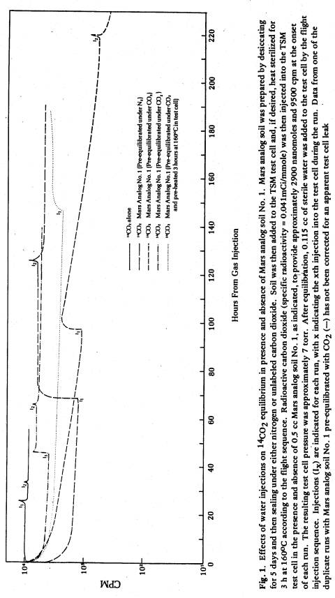
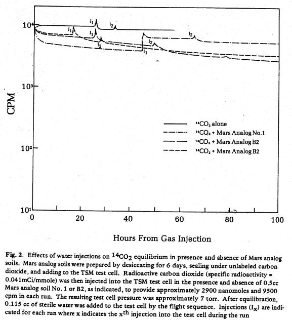
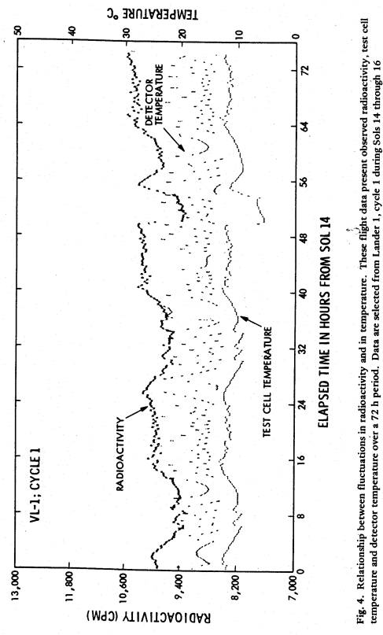
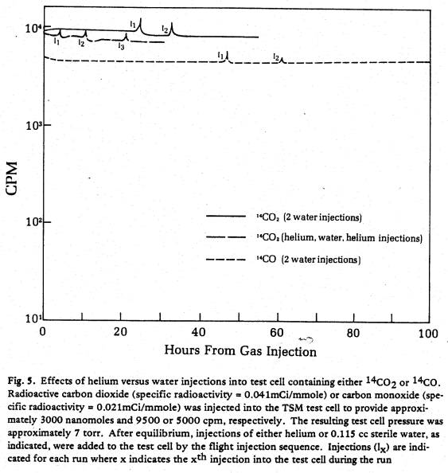
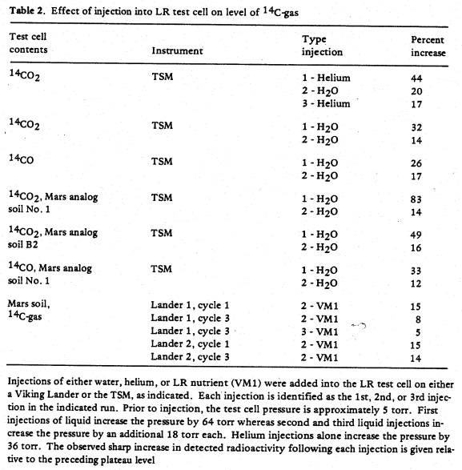

J. Mol. Evol. 14, 185-197 (1979)
Laboratory Simulations
of the Viking Labeled Release Experiment:: Kinetics Following Second Nutrient
Injection and the Nature of the Gaseous End Product
Gilbert V. Levin and
Patricia Ann Straat
Biospherics
Incorporated, 4928 Wyaconda Road, Rockville, Maryland 20852, U.S.A.
Summary. Injection of 14C-labeled
nutrient onto Mars soil produced an evolution of 14C gas in the
Viking Labeled Release (LR) experiment. However, a second injection of nutrient
seven days later was followed by an abrupt diminution of the amount of
radioactive gas in the test cell. Simulation experiments performed in the LR
Test Standards Module (TSM) have yielded a plausible explanation for this
diminution. Radioactive carbon gases were injected into the TSM test cell in
the presence and absence of two Mars analog soils. After equilibration, water
was injected and its effect observed. The results indicate that the flight data
following second nutrient injection can be explained on a physico-chemical basis
involving a carbon dioxide/water/soil equilibrium in the test cell. The results
also suggest that the gaseous end product of the Labeled Release reaction on
Mars is more likely carbon dioxide than carbon monoxide.
Key words: Viking biology ¾ Extraterrrestrial life
detection ¾
Labeled release experiment
Introduction
The Viking Labeled Release (LR) life detection experiment (Levin and Straat, 1976a) has obtained results consistent with the presence of microbial life on Mars (Levin and Straat, 1977b, 1979a). However, failure of corroboration from two other life detection experiments and the organic compound analysis renders the issue doubtful. Our laboratory has undertaken a continuing investigation of the Viking LR data with the goal of assessing whether or not the LR Mars results could have been caused by inorganic reactions between the LR nutrient solution and the Mars surface material.
The flight data (Levin
and Straat, 1976b, 1977b) show that, upon injection of the radioactive nutrient
onto samples of Mars soil, a rapid evolution of 14C-labeled gas
occurred for several sols (1 sol = 24.6 h). When duplicate samples of the Mars
soil were heated to 160ºC prior to conducting the experiment, no significant
evolution of gas occurred after nutrient injection (Levin and Straat, 1976b,
1977b, 1979a). To date, laboratory simulation experiments seeking to duplicate
these results chemically or physically have not succeeded (Levin and Straat,
1977a, 1979b, in prep.). However, a second component of the LR experiment also
requires explanation for an overall understanding of the nature of the surface
of Mars. This component of the active Mars response was seen after 7 sols when
a second nutrient injection was added to the test cell. A brief spike of
radioactivity was observed followed immediately by a 30-35% decrease
(calculated from the apex of the spike) in the amount of radioactive gas
present in the headspace. This response is unique and has never been observed
in tests with variable or sterile terrestrial soils. This paper presents
laboratory evidence for a physico-chemical explanation of this portion of the
LR data.
To examine the second
component of the LR response, the LR Test Standards Module (TSM, a flight-like
laboratory instrument in which Mars atmospheric and experimental conditions can
be closely simulated) was adapted to accommodate separate gas injections into
the experimental test cell. After equilibration of a radioactive gas in the
test cell with or without soil, water can be injected through the nutrient
injection port (S/45) using the flight injection sequence. Because the liquid
injection uses water rather than radioactive nutrient, no observable metabolic
activity results from the liquid injection and the gas/water/soil equilibrium
can be studied independently of biology.
The radioactive gas
evolved in the LR experiment on Mars could be a carbon gas other than carbon
dioxide; Plumb (1978) has suggested on theoretical grounds that the gas may in
fact be carbon monoxide. To distinguish experimentally between carbon dioxide
and carbon monoxide as possible end products, studies have been performed in
the modified TSM with both 14C-labeled carbon monoxide and 14C-labeled
carbon dioxide. The responses of each gas to liquid injections and to
temperature cycle patterns similar to those observed in the LR test cell during
the Mars mission were examined for possible matches to flight data. Evidence is
presented that the 14C-labeled gas evolved on Mars is more likely
carbon dioxide than carbon monoxide.
Experimental
Test Standards Module
(TSM).
The LR TSM and its similarity to the flight instrument have been diagrammed and
described in detail elsewhere (Levin and Straat, 1976a). In summary, the
instrument consists of a 3.5 cc capacity stainless steel test cell connected
via a 33 cm long 0.2 cm i.d. diameter ‘swan neck’ tube to a detector cell
containing two solid state beta detectors. The total volume of the test cell
detector assembly is approximately 8.5 cc and gas equilibrium between them is
established within approximately 60 min. The labeled gas contained within this
volume is counted with an efficiency of approximately 3%. Liquid (nutrient or
water) is stored in an adjacent reservoir connected to the test cell by 0.1 cm
i.d. diameter tubing. Upon appropriate opening of the solonoid valves
separating the reservoir from the test cell, 0.115 cc liquid is introduced into
the test cell. For the studies reported herein, the TSM was adapted to
accommodate an injection of radioactive gas into the test cell through a
separate injection port (located between S/52 and test cell).
Specific Radioactivity
of Injected Gas.
In the flight experiment, the radioactive gas which evolves following initial
injection could only be derived from the supplied radioactive nutrient. In the
‘active’ test cycles, some 10,000-15,000 cpms evolved, corresponding to
approximately 30 nanomoles of a one-carbon gas which mixed with the Martian
atmosphere in the headspace of the detector and test cell assembly. Since the
headspace volume is 8.25 cc, allowing for the 0.5 cc volume of soil, and since
the Mars atmospheric pressure and composition are approximately 5 torr of
carbon dioxide, approximately 2,500 nanomoles of unlabeled carbon dioxide were
also present in the test cell. Assuming the end product of the Mars reaction is
carbon dioxide, this means that at plateau, approximately 2,530 nanomoles were
present and that the specific radioactivity of the evolved gas has been
considerably diluted. Thus, the 30-35% decrease observed during the mission
following second injection corresponds to an absorption of approximately 850
nanomoles of carbon dioxide, or 10 nanomoles if the gas evolved in the LR
experiment is other than carbon dioxide.
In attempting to equate
the TSM studies to these flight conditions, the radioactive gases utilized were
selected to provide a count level of approximately 10,000 cpm at approximately
5‑8 torr and 2,500‑3,500 nanomoles, depending on the specific
radioactivity of available commercial gases. The gas injection volume was 100
µl and the specific radioactivities of 14CO2
(International Chemical and Nuclear Corp.) and 14CO (New England
Nuclear) were 0.041 and 0.0205 mCi/nmole, respectively.
Mars Analog Soils. The two Mars analog
soils were prepared by the Viking Inorganic Analysis Team to match, as closely
as possible, the analysis of the Mars sample obtained by the Viking x-ray
fluorescence instrument. The first analog soil prepared, called Mars analog No.
1, was based on the tentative analysis of initial data from Chryse (the first
landing site on Mars). As the Mars data became more refined, the second analog,
called B2, was prepared by that Team. The composition of both soils (A. Baird,
personal communication) is shown in Table I; both contain approximately 18%
ferric oxide, have a pH of 7.2, and range in particle size from 10‑100 µ.
The most significant difference between them is that the iron in the B2 soil is
approximately 11% gamma Fe2O3, a compound believed to be
present on Mars (Hargraves et al., 1977) and hypothesized (Oyama et al., 1976)
to be involved in the LR reaction. Prior to the addition of each test analog
soil to the TSM, the soil was dried extensively (5 to 6 days) in a dessicator
jar by pulling a vacuum through a cold trap; it was then sealed for a minimum
of 3 days under one atmosphere of either nitrogen or carbon dioxide gas, as
indicated.
Experimental Sequences. Experiments were conducted at 10ºC in the presence and absence of Mars analog soil in the test cell. When soil was to be present, an ampoule containing 0.5 cc of the prepared Mars analog soil was broken near the test cell and the soil added under a stream of dry carbon dioxide. After equilibrating in the sealed test cell at 10ºC and 5 torr carbon dioxide for 2.5 h, if desired, the soil was then sterilized according to the flight sequence by raising the temperature in the test cell to 160ºC for 3 h. After cooling for 9 h at room temperature, the test cell was vented for four minutes and the soil then incubated at 10ºC, the temperature of the Mars experiments, for an additional 1.5 h.
All experiments were initiated by the injection of 100 µl radioactive gas into the test cell which provided a total test cell pressure of approximately 7.5 torr. Subsequent injections of sterile distilled water were performed using the flight nutrient injection sequence (Levin and Straat, 1976a) in which the test cell was pressurized by two sequential additions of 18 torr helium prior to injection of 0.115 cc water and 18 torr helium. At the end of the injection, the total test cell pressure was approximately 69 torr, including 10 torr from the vapor pressure of water. At this point, the test cell liquid and gas contents became equivalent to that of a flight test cell following first nutrient injection. Addition of a second 0.115 cc water injection into the TSM test cell was performed as during the Viking mission without the two preceding helium pressurizations, but accompanied by 18 torr helium, giving a total test cell pressure of 87 torr. In some instances, helium pressurization was performed in the absence of a water injection for a total pressure increase of approximately 18 torr per pressurization.
Results and Discussion
Typical results obtained upon injection of 14C-labeled carbon dioxide into the empty test cell are shown in Fig. 1. The magnitude of the gas level is approximately 9 ,500 cpm and was shown in a total of 14 runs to be highly repeatable with a range of only ±4%. Equilibrium between the test cell and the detector cell was reached within about 1 h. A later injection of water into the test cell resulted in a spike of radioactivity followed by a decrease to a new plateau level somewhat lower than that observed prior to the injection. A second water injection also caused a brief spike and also lowered the plateau level slightly below that observed prior to the second injection. These results show that physico-chemical changes in the observed gas plateau levels can be induced by injections of water and suggest that the changes relate to the carbon dioxide/water equilibrium.
With Mars analog soil No. 1 present in the test cell, injected 14C-labeled carbon dioxide immediately began to disappear, reaching equilibrium with the soil at approximately 50 h (Fig. 1). This decrease probably resulted from an exchange between injected 14CO2 and the gases contained within the soil matrix. In support of this hypothesis, more 14CO2 (app. 85%) was adsorbed within 10 h by a soil pre-equilibrated with nitrogen than by a soil pre-equilibrated with carbon dioxide (50-60%). It should be noted that two runs were performed with soil pre-equilibrated with carbon dioxide because a leak was suspected in one of the run. When corrections are made for the estimated leak rate, the results of both runs are similar. For soil pre-equilibrated with carbon dioxide, sterilization in the test cell for three h at 160ºC did not affect the results.

Upon injection of water into the test cell containing 14CO2 in equilibrium with Mars analog soil No. 1, all soil samples released carbon dioxide such that the gas level in the headspace attained a new plateau level (Fig.1). In the case of soil of pre-equilibrated nitrogen, the new level was almost equal to that observed when radioactive gas was originally injected. In the case of the soil pre-equilibrated with carbon dioxide, the new level was above that prior to the water injection but not as high as the original level following injection of gas into the test cell. However, the new level cannot be precisely determined because the extent of dilution with unlabeled gas which had been adsorbed on the soil during pre-equilibration is unknown. Thus, the observed level is probably below that which would have been observed had no dilution occurred. Upon a second injection of water, all samples exhibited a brief spike followed by a decrease such that the final plateau level was below that observed prior to injection. The percent decrease (calculated from the apex of the spike) is 27, 42, and 50% for the three runs with Mars analog soil, comparable to the 30-35% decreases observed in LR flight data.
These results suggest that the decreases observed on flight following second nutrient injection could be due solely to physical equilibrium phenomenon related to the carbon dioxide-water equilibrium rather than to a biological or chemical reaction with the LR nutrient. Comparing the results in the presence and absence of soil, it can be seen that soil magnifies the effect, but changes are apparent even in the absence of soil. In addition, because an outgassing rather than a decrease is observed in the TSM studies following the first water injection onto soil, the results also suggest that the Viking LR results after first injection probably need not be corrected for a masked reaction involving adsorption of radioactive gas simultaneous with its evolution. (Note that in the TSM experiments, 14CO2 evolution following first water injection is not equivalent to 14CO2 evolution following the first nutrient injection on flight. In the TSM experiments, gas evolution results from an outgassing whereas on flight it must result from a biological or chemical reaction between the LR nutrient and the Mars soil.)
Two additional TSM experiments were conducted in which water was injected into the TSM test cell containing 14CO2 in equilibrium with Mars analog soil B2. The results of duplicate runs are compared in Fig. 2 to results obtained in the presence and absence of Mars analog soil No. 1. As shown, with the B2 soil, both water injections resulted in a brief spike followed by an immediate decrease (ranging from 11-33%) in plateau level. Superimposed on this reaction, however, is a gradual adsorption of radioactive gas by the soil. The rate of adsorption is repeatable in both experiments and no test cell leak could be discerned in either. Thus, while the B2 soil containing γ-Fe2O3 amplifies changes in 14CO2 levels, the changes differ from those obtained with the Mars analog soil No. 1.
A similar series of TSM experiments was next conducted with 14C-labeled carbon monoxide (Fig. 3). After injection of water into the TSM test cell containing 14CO (no soil), a brief spike is seen followed by a return of the gas level to essentially the same level observed prior to injection. The addition of Mars analog soil No. 1 has no impact on these results. The failure of 14CO to show changes in plateau level in response to water injections suggests that carbon monoxide was not the gas evolved on Mars.

During the LR flight experiments, levels of radioactive gas present in the test cell headspace were observed to undergo a diurnal fluctuation. A detailed kinetic study has revealed that these fluctuations directly correlate with fluctuations in the test cell temperature (Fig. 4). To determine the influence of temperature on levels of 14CO2 or 14CO present at the end of the experiments shown in Fig. 1-3, the test cell temperature was cycled between 9ºC and 16ºC in a pattern approximating that on flight. With 14CO present, no changes in gas level subsequently occurred either in the presence or absence of Mars analog soil. With 14CO2 present, fluctuations in the gas levels in the detector cell were observed in the presence of both Mars analog soils but not in the absence of soil. These results eliminate the possibility that the gas fluctuations on flight were caused by temperature-driven gas distributions between the test cell and the detector cell since both gases would have been affected equally in the TSM experiments if this were the case. Rather, the temperature driven fluctuations in gas level appear related to changes in the gas/water/soil equilibrium in the test cell. The fact that they occur with 14CO2 and not with 14CO supports the conclusion that the end product of the reaction on Mars is not carbon monoxide and that it is probably carbon dioxide. It should be noted, however, that while the temperature-driven fluctuations in the TSM are similar in pattern to those in flight data, they are only about one-third the magnitude seen on flight.

The possibility was next examined that the spike associated with each injection is caused by a pressure surge since all liquid injections into the test cell are pressurized under helium (see Experimental). To test this, helium only (no liquid) was injected into a test cell containing 14CO2. The results are compared in Fig. 5 to effects of water injections added to the TSM test cell containing either 14CO2 or 14CO. As shown, injection of helium alone provides a spike comparable to that obtained with a liquid injection. Further, the magnitude of the effect is independent of the type of gas present.

A summary of percent increase observed for each of the spikes in Fig. 5 is given in Table 2 along with similar data derived from other TSM experiments in which Mars analog soil was present with the labeled gas. In each case, a higher percent increase is observed for the first injection than for a second or third injection during a given run. This correlates with the higher percent pressure increase accompanying a first injection. The results suggest that test cell pressurization with helium causes a transient surge of radioactive gas into the detector chamber, thereby causing the observed spike. Further, all TSM spikes resulting from second water injections are similar in magnitude to the transient spikes observed during the Viking mission after second (but not first) nutrient injections. Thus, the flight spike following second injection appears to result from a pressure surge rather than from additional reactions between the LR nutrient and the Mars soil.

In conclusion, that part of the LR flight data observed following second nutrient injection can be accounted for by physico-chemical explanations. Further, a carbon dioxide end-product for the Mars reaction can account for the observed changes in plateau level accompanying liquid injections and for the temperature driven diurnal fluctuations in gas level. However, it is of interest to note that the reaction with Mars analog soil No. 1 more closely simulates flight data than that with Mars analog soil B2. Future laboratory simulation experiments seeking chemical explanations of the LR flight data will focus on that part of the flight response following first nutrient injection.
Acknowledgments. We are indebted to Jon Calomiris for his creativity in adapting the TSM hardware and for his dedication in performing the TSM experiments cited herein. This effort has been supported by NASA Contract Nos. NAS1-9690 and NASW-3162.
References
Hargraves, R.B., Collinson, D.W., Arvidson, R.E., Spitzer, C.R. (1977). J. Geophysical Research. 82,4547-4558 .
Levin, G.V., Straat, P.A. (1976a). Origins of Life. 7, 293-311
Levin, G.V., Straat, P.A. (1976b). Science. 194,1322-1329
Levin, G.V ., Straat, P.A. (1977a). Biosystems. 9,165-174.
Levin, G.V., Straat, P.A. (1977b). J. Geophysical Research. 82,4663-4667
Levin, G.V., Straat, P.A. (1979). J. Mol. Evol. 14,167-183
Oyama, V.I., Berdahl, B.J., Woeller, F., Lehwalt, M. (1978). COSPAR-Life Sciences in Space Research. 16, 1-6
Plumb, R. (1978). Presentation at the XXIth Plenary; Meeting of COSPAR. Innsbruck May 25
Received December 12, 1978; Revised
April 25, 1979